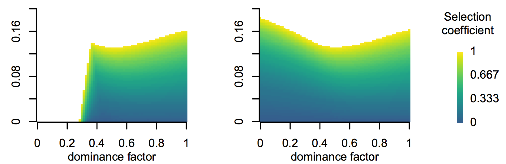

Evolutionary Theory Group
Bio681

This reading group is designed for students interested in learning more about evolutionary theory. It should benefit you if you want to do theory or if you want to understand how your research fits into the bigger picture. This first semester we will be reading Evolutionary Theory: Mathematical and Conceptual Foundations by Sean H. Rice.
Our group meets in Butler hall room 103 Mondays from 12-1.
For more information email Dr. Blackmon.
Front Matter
Chapter 1: Selection on one locus